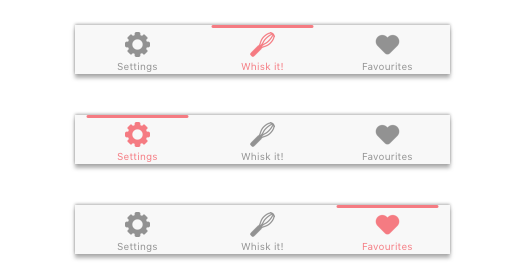
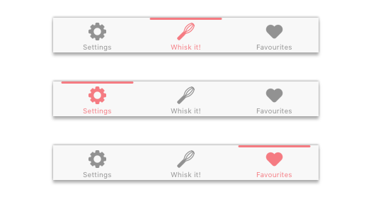

Sky Tactics
Fusion battler for Android
How do you solve the problem of creating for a fast-paced mobile game while trying to communicate information to the player? What can you do to coherently tell the player what they need to know, in the least possible time? I was tasked with designing in a context where even a second too long can be the difference between life or game over to a player. Below are just a few examples of what I worked on for Sky Tactics during my work-term at Uken Games.
The need for speed (and understanding)
In many types of games, players are required to be able to make split second decisions under high-pressure environments. It's important to give players easily recognizable visual/audible cues that gives the necessary information for these decisions, in a reactionable time-frame. If these scenarios aren't designed for correctly, it can lead to a pretty frustrating time for the player. You don't want to be driving and suddenly your navigation tells you that you need to switch over two lanes in order to make a right turn in 50 metres (looking at you, Apple Maps!).

The previous iteration of the victory screen.

The redesigned victory screen.
The redesigned victory screen, while only being 2 seconds shorter than the previous one, was actually very important to the flow of the player. This animation would play at the end of every battle, and the long length of it would take players out of the "zone" (a mythical state of video game zen, where you and the game you're playing are one and the same). In this zone, your mind is 100% focused on the game. It's like being interrupted by yet another group chat notification when you're trying to get started on a task. It's jarring and annoying.
The approach
Throughout my 4 month work-term on Sky Tactics, I completed and took ownership of over 30 tasks both big and small. These tasks would consist of major game system overhauls (Friends, Crafting, Messages, Store, Battle and Events), and many countless animated prototypes. Most of these tasks began with some paper and a pen. And lots and lots of sticky notes.
These ovehauls and designs usually involved a series of steps:


Costant Collaboration
Throughout the design process and during much of my stay, a big part of my own personal growth took place in the form of how I learnt to collaborate with a team. Due to the team structures at Uken, we were always working in small, agile teams, and I learnt that it was very beneficial to get non-designers familiar with the design principles within the team. I strove to get all members of the team to partake in the design process, as well as take an interest in it. I believe that it's very important to get different persepctives involved in the design process, because at the end of the day, we don't design inside of a bubble.

A collaboration "meeting" we had off-site. I'm the one in the black helmet.
Pantry
An ingredient first recipe app
One of the biggest issues that we face on a daily basis is food wastage. Every time we do groceries, inevitably we throw away a full head of lettuce, or a whole block of cheese, or even 2 pounds of chicken because we overestimated how much we would need, then proceeded to leave it in the fridge instead of the freezer (for a couple of weeks, eek!).
Pantry is an ingredient focused recipe experience that makes it simpler than ever to quickly cook with the things around you. It takes seconds to find a recipe that you can make with the ingredients you have on hand.

Navigation
Our first in-app navigation consisted of accessing different app sections through a top oriented navigation bar. However, we found out through some guerilla testing that when people are actively cooking, they seldom have more than one hand available at at time. It was difficult to flow through the app while cooking if many of the settings and navigation buttons were out of initial reach.

Our first navigation iteration, with top heavy buttons. Yes, this app was formerly named Whisk.
The solution was to replace the existing navigation with a bottom navigation bar. An iOS standard for years, it places important app views near the bottom of the screen, easier to reach. Easier one handed use allows for an easier time using the app while cook, and was one of the ways Pantry differentiated itself from other products in the same sphere.
 

Reduced complexity
The initial recipes view featured an overview page where a user would use a swipe action to access the recipe details view. We later found out from a friend that was using the app for us that it was simply too annoying a gesture to go through all the time. When browsing multiple recipes, looking for ones that didn't involve the use of an oven, it was simply an unnecessary additional step in the user flow. Instead, I realized that we needed to remove the behaviour, and have it directly link to the recipe details.

The old recipes page involved a swipe up gesture to access the instructions/ingredients screens.

Our reiteration removes it and goes straight to the recipe details.
Recipies, Ordered!
Recipe instructions and ingredients in one area makes it pretty convienient to read at once, right? But what if I need to constantly scroll between finding what kinds of pepper and onion I need, and how to prepare them? To solve this problem, the seperated instructions and ingredients views comes in. You can switch between the two views at any time, which means you can have your steak and prepare it too.

Hustle
Turn talk into action: an app redesign
I was hanging around with a friend (let's call her Dee) on a uneventful, Monday night in Waterloo (per the usual) when I noticed her looking at an app on her phone. The bright colours immediately caught my eye, so I had to ask "Dee, what app is that?". It was an app for a company that Dee had previously worked for, Hustle. Immediately the gears had started to turn in my head, how could I make this better?
Hustle are a pretty interesting company, solving a pretty interesting problem. How do we make the process of sending multiple messages to people when organising an event easier? I got the opportunity to play around with the app and have some UX and some UI thoughts that I wanted to share.
A more unified design
The overall redesign.
After a good amount of toying around with the application, I began to feel that the elements had too little contrast from each other. Because of that, it was a bit harsh on the eyes and at times, harder to decipher than it needed to be. I strove to reduce that through introducing more greys and element seperation through layers and shadows, but still keep the colour scheme that Hustle had before.
Streamlined Navigation
Left: Current App Right: My redesign
The current Hustle navigation bar only has three important views tied to it along with a button dedicated towards the settings page. For only two main views, I felt that having a top navigation button would be more streamlined, and allowed me to move the settings button to one of the standard iOS top-left areas. I also was able to more obvious selected states for the navigation views (an underline), which is always a plus.
Prioritized Groups/Tags
Left: Current App Right: My redesign
Items were already organized by groups and tags, however when viewing your tasks on the previous design, it was hard to seperate these tasks by group quickly. It only made sense to make this more noticable to the user. I placed these tags/groups at the very top of a section to make sure you knew what you were acting upon before you initiated. Then, combining actions by tags/groups only seemed natural followthrough.
A Friendly Welcome
An onboarding process would help users understand the capabilities of the app from the very beginning.
It's important for any app to have an introduction page, and for Hustle it's no different. When I first logged onto the app, I noticed a big lack of explanation of what the app does, and what I can do with the app. Adding an onboarding process to immediately give the user an example of the apps use cases eases the learning process of the app.
Similarly, I also designed a First Time User Experience (FTUE) that aims to help users get acquainted with major app flows and actions. They help reinforce the onboarding process and should definitely be considered to help new users understand the app.
A satisfying workflow
A large item that I felt was missing was something like a fan-fare or substantial response from the application when you finished a workflow. Going through a workflow is the main objective of the application, but why is it that when you finish one, it's met with an unsatisfying complete screen?
The current workflow proccess.
It's especially important to make the user feel accomplished when they complete a workflow, especially when they can sometimes consist of hundreds (!) of messages to as many contacts. A fan-fare of some sort would certainly help in this aspect, and I think it would also help convey that sense of accomplishment that I'm sure Hustle is trying to facilitate with these screens and interactions. Even a small animation can go a long way here.
A redesigned workflow proccess.
Dee's thoughts
After doing a design iteration, it's always important to go back and test it out. You need to close the loop: design isn't just creating something pretty, you need to see if it works well too.
Here are some of her thoughts:
My thoughts
Overall I had a blast redesigning Hustle and definitely learnt a lot from it. A good few of my solutions were actually illegal (you're not allowed to automate sending mass SMS's!) and after speaking to Dee, I got to view of how Hustle as a company thinks, and tried to design with that lense.
If anyone from the Hustle team has read this, I hope it's been useful!
Side Projects
Things I do for fun.
Here are a couple of side projects that I've been working on. There's even a game or two for you to try out, so relax and kick back. Thanks for coming and reading this far.
Sharks with Legs

Created for TOJAM 2017, Sharks with Legs is a game about Sharks...with legs. I did some sprite work (my first foray, and nothing in comparison to @juansolon's work) and quite a bit of game design work.
For my first experience in Game Jams it was lot of fun, and a lot of stress! Overall a great experience! Thanks to @dvdfu, @arrowing_, and @juansolon for the good times!
Download and play the game on itch.io!
Übersicht Widgets
Recently, I had been craving minimal, lightweight widgets for my Macbook Pro. I stumbled upon Übersicht and decided to give it a try. Using coffee(Script) and a late night here and there I was able to create a few lightweight widgets that suited my preferences perfectly.
Check them out on my GitHub!
Productribbble
At a certain UWaterloo hackathon, I tried my hand at working with APIs and JS. This is mainly for my own use, because I needed a Dribbble start page for Safari that closely replicated some of the ones on the Google Chrome webstore. I plan to update it with Product Hunt integration in the future.
You can view the project on codepen here.

Hey there, my name is
Mishaal Al Bashir
I first explored the digital world as a child, through MS paintings, video games, and music. In middle school, I spent countless hours creating themes for Windows XP, icons, and tweaking system sounds. Then, in high school, I focused on digital media and communication, as well as creating our monthly TV show: X-Factor. During my post-secondary studies at the University of Waterloo, I explored the relationships between business, technology, computer science, and art by majoring in Global Business and Digital Arts; a specialised program combining these diverse fields.
During my studies, I gained valuable insight into user behaviour working as a QA for an online banking platform. From there, I learnt the ropes at a mobile gaming company as a UX Design Intern. Now graduated, I've designed for companies working with Waterloo students, as well as within the Velocity Incubator. I've been a part of established teams as well as being the sole designer in a group.
Arcades and computers are still two of my favourite things.